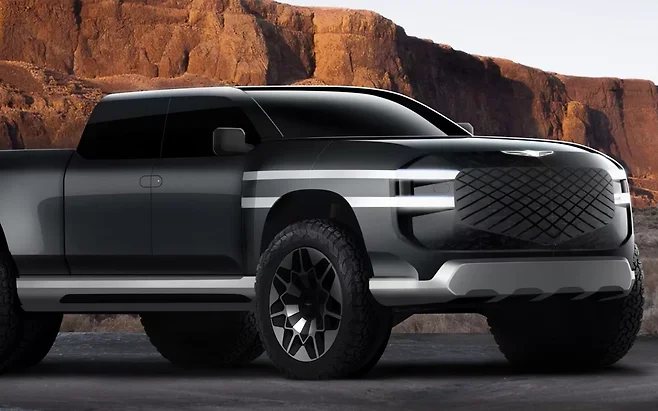
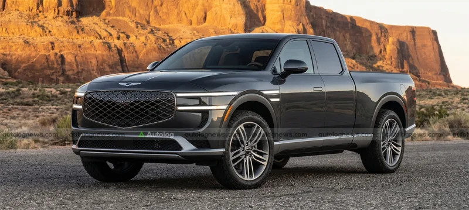

▲ 제네시스 픽업의 공식 이미지는 아직 없다. 사진은 해외 매체가 만든 상상도(렌더링) ⓒ Carscoops
제네시스가 브랜드 최초의 럭셔리 픽업트럭 출시 가능성을 검토하고 있다는 소식이 전해졌습니다. 현대차그룹이 북미 시장을 겨냥해 개발 중인 신형 프레임바디(바디 온 프레임) 플랫폼을 기반으로, 제네시스 배지를 단 버전을 내놓을 수 있다는 것입니다. 다만 아직은 시장성과 브랜드 적합성을 따져보는 초기 검토 단계로, 공식 출시가 확정된 것은 아닙니다.
| 구분 | 내용 |
|---|---|
| 플랫폼 | 현대차 신형 프레임바디(사다리형 프레임) |
| 파워트레인 | 디젤 대신 하이브리드 또는 EREV 유력 |
| 실패 선례 | 메르세데스-벤츠 X클래스(단종) |
| 진행 단계 | 초기 검토, 출시 미확정 |
1. 왜 지금 픽업트럭인가 — 벤츠도 포기한 틈새시장

▲ 다이아몬드 패턴 그릴 등 제네시스 디자인 언어를 픽업 차체에 적용한 상상도 ⓒ Carscoops
프리미엄 브랜드의 픽업트럭 진출 사례는 매우 드뭅니다. 메르세데스-벤츠가 2017년 선보인 X클래스가 대표적인데, 기대 이하의 판매 성적으로 2020년 단종된 바 있습니다. 현재 럭셔리 픽업 시장은 사실상 토요타·포드·쉐보레·닛산 같은 전통 픽업 브랜드가 지배하고 있어, 프리미엄 브랜드가 진입할 여지가 많지 않다는 게 중론입니다. 그럼에도 제네시스가 이 시장을 검토하는 이유는 강력한 견인력과 적재 능력을 원하면서도 고급스러운 승차감을 포기하지 않는 고소득 레저 소비자층이 분명히 존재하기 때문입니다.
2. 프레임바디 플랫폼과 EREV — 기아 타스만과 무엇이 다를까

▲ 기아 타스만처럼 사다리형 프레임 구조를 적용할 것이란 전망을 반영한 상상도 ⓒ Autologa News
제네시스 픽업이 실제로 나온다면, 기아 타스만처럼 사다리형 프레임을 적용해 험로 주행 성능과 내구성을 확보할 것으로 보입니다. 다만 파워트레인은 디젤 대신 하이브리드나 주행거리 연장형 전기차(EREV)가 유력합니다. EREV는 엔진으로 배터리를 충전하고 순수하게 전기모터로만 구동하는 방식으로, 디젤 픽업 특유의 소음과 진동 없이도 강력한 초반 토크를 낼 수 있습니다. 현대차그룹은 이미 제네시스 라인업에 하이브리드·EREV 투트랙 전동화 전략을 적용하기로 한 상태라, 픽업 역시 이 흐름을 따를 가능성이 큽니다.
3. 아직은 검토 단계 — 제네시스의 다른 프로젝트들
현재 제네시스는 픽업트럭 외에도 여러 프로젝트를 동시에 진행 중입니다. 대형 전기 SUV 플래그십 'GV90' 출시가 임박했고, 고성능 서브 브랜드 '마그마'의 라인업도 확대되고 있습니다. 여기에 터보차저 V8 엔진 탑재 가능성까지 거론되는 상황이라, 픽업트럭은 우선순위에서 다소 밀려 있는 것으로 보입니다. 현대차의 신형 픽업 개발이 구체화되는 시점에 맞춰 제네시스 버전의 윤곽도 드러날 가능성이 높습니다. 확정된 것은 아무것도 없지만, 업계에서는 프리미엄 브랜드가 비어 있는 럭셔리 픽업 시장에 뛰어들 명분은 충분하다고 보고 있습니다.